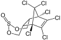

endosulfan

Definition: Endosulfan is an off-patent organochlorine insecticide and acaricide that is being phased out globally. It became a highly controversial agrichemical due to its acute toxicity, potential for bioaccumulation, and role as an endocrine disruptor. Because of its threats to human health and the environment, a global ban on the manufacture and use of endosulfan was negotiated under the Stockholm Convention in April 2011. The ban has taken effect in mid-2012, with certain uses exempted for five additional years. More than 80 countries, including the European Union, Australia, New Zealand, several West African nations, the United States, Brazil, and Canada had already banned it or announced phase-outs by the time the Stockholm Convention ban was agreed upon. It is still used extensively in India and China despite laws against its use. It is also used in a few other countries. It is produced by the Israeli firm Makhteshim Agan and several manufacturers in India and China. On 13.05.2011, the India Supreme Court ordered a ban on the production and sale of endosulfan in India, pending further notice.
Source: Wikipedia
Wikipedia Page
Wikidata Page